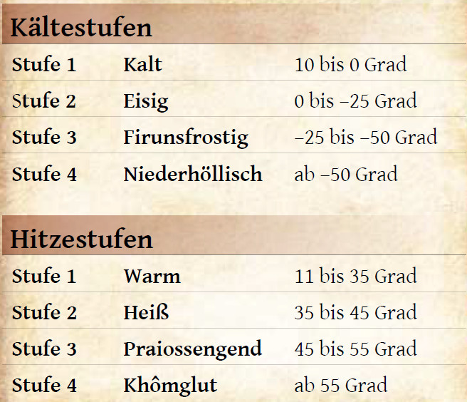

Trotz seiner verhältnismäßig geringen Größe von 3.000 mal 2.000 Meilen finden sich alle denkbaren Klimazonen in Aventurien.
Währen der äußerste Norden von ewigen Eis bedeckt ist, wuchern im Süden tropische Schungel. Dazwischen findet man Tundra und weite Steppen, Taiga und waldige Mittelgebirge, blühende Flusslandschaften, undurchdringliche Wälder, hitzeflimmernde Wüsten und moskitoverseuchte Sümpfe. Dies ist inneraventurisch vor allem dadurch zu erklären, dass das Klima auf Dere nicht immer irdischen Gesetzmäßigkeiten folgt. Das Wetter in Aventurienhat häufig auch etwas Übernatürliches. Blitze werden oft mit dem Wirken von Göttern assoziiert, vor allem dem der streitbaren Göttin Rondra, die auch als Herrin von Sturm und Blitz gilt. Der Nebel, der so trefflich viele Dinge verbergen kann, wird häufig mit dem gerissenen Phex, dem Gott der Heimlichkeit verbunden. Viele Winde tragen die Namen von Götterkindern, weil sie für die Aventurier launenhaft und unerklärlich bleiben und sie sollen Efferds gehorchen, dem Hernn von Wind und Wogen. Es gibt eigentlich kaum eine Wettererscheinung, die nicht dem Wirken eines Unsterblichen zugeordnet wird - oder dem Wirken von mächtiger Magie, denn es ist bekannt, dass auch Zauberkundige in der Lage sind, das Wetter zu beeinflussen. So gibt es etwa Legenden, dass das Gebiet, in dem sich heute die Wüste Khom erstreckt, einst ein vor Leben pulsierender Dschungel gewesen sei, bis es von mächtiget Magie in eine lebensfeindliche Einöde gewandelt wurde.
Der Kontinent wird durch drei große Klimazonen geprägt. Im hohen Norden herrscht Kälte, die umso größer wird, je weiter man nach Norden zieht. Im äußersten Norden machen ewiger Frost, Packeis und beißende Winde das bloße Überleben zu einer gewaltigen Herausforderung. Herrscht Firunsfrost (unter -25 Grad), ist es so kalt, dass die Haut an metallenen Gegegenständen festfriert und ein unzureichend gegen Kälte geschützter Körper so viel Wärme verliert, dass der Kältetod droht. Wird es gar niederhöllisch kalt (unter -50 Grad), gefriert sogar das Meer und durch plötzlich auftauchende Eisstürme ist ein Vorwärtskommen oftmals kaum mehr möglich. Kein Wunder also, dass der höchste Norden bisher kaum von Menschen bereist wurde und zu großen Teilen unentdecktes Land ist.
Der größte Teil Aventuriens, in etwa der Bereich zwischen Walbergen und Raschtulswall, ist einem gemäßigten Klima unterworfen, was vor allem bedeutet, dass sich hier die Jahreszeiten deutlich zeigen. Die Sommer können sonnig, heiß und trocken sein, die Winter beißend kalt sowie voller Schnee und Eis. Nur selten aber werden extreme Temperaturen jenseits der Stufen eisig (bis -25 Grad) oder warm (bis 35 Grad) erreicht. Besonders die Küsten Mittelaventuriens scheinen in diesen Jahreszeiten vin den Göttern gesegnet: Der Festumer Hafen friert so gut wie nie zu, obwohl die bornische Handelsstadt ziemlich weit nördlich liegt und das Bornland frostig kalte Winter kennt. Andererseits sind die Sommer im horasischen Kuslik nie so unerträglich, dass das alltägliche Leben zum Erliegen kommt. Frühling und Herbst sind durch häufige Neben, heftige Winde und Regenfälle geprägt. Vor allem bringen sie entlang der Flüsse oftmals Überflutungen mit sich, die das Leben in den Auen und an den Flussläufen prägen. In diesen Breiten leben die meisten Menschen und andere Völker, denn der Boden wirft gute Erträge ab und das Vieh hat genügend Weidegründe.
Im Süden Aventuriens ist es heiß. Je nachdem, wo man sich aufhält, ist diese Hitze atemraubend und trocken oder drückens und schwül. Die Wüste Khom ist ein schier endlos erscheinendes Sandmeer, auf das die Sonne gnadenlos niederbrennt und das nur die Gluthitze des Tages und die empfindliche Kälte der Nacht kennt. Nur in dieser aventurischen Region gibt es ein natürliches Temperaturgefälle von Khomglut (über 55 Grad) bis hin zu kalt (knapp über 0 Grad). Neben chronischem Wassermangel sind hier vor allem die Sandstürme, die wie aus dem Nichts entstehen können, die größte Herausforderungen für den Reisenden, der von Oase zu Oase finden muss, um nicht zu verdursten.
Jenseits der Khom schließen sich Regenwälder an, ewiggrüne Dschungel und Mangrovenwälder sowie moskito- und krokodilversuechte Sümpfe und nebelverhangene Gebirge, die bisher kein Mensch zur Gänze erkundet hat. Langanhaltende Regenfälle, die kleine Bäche in reißende Ströme und sicheren Boden in morastige Tümpellandschaften verwandelten, erschweren hier das Leben und Reisen.